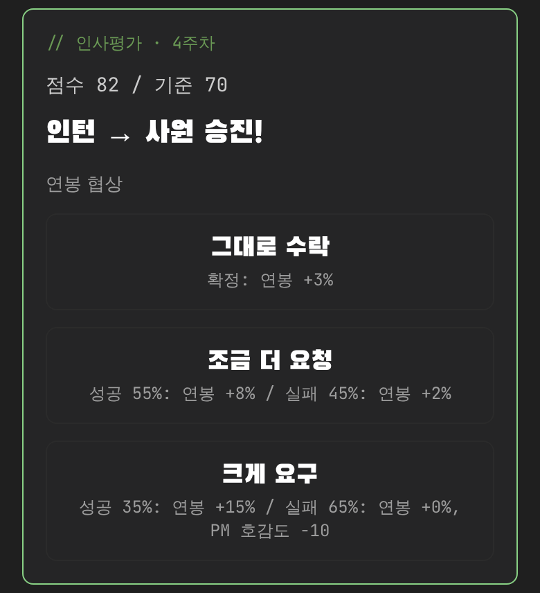
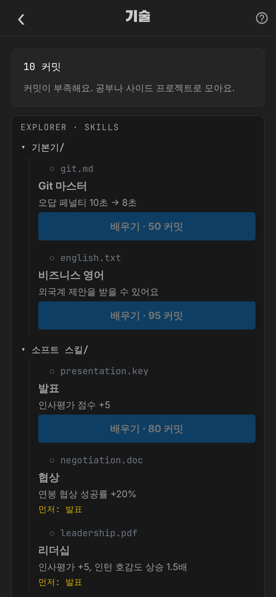
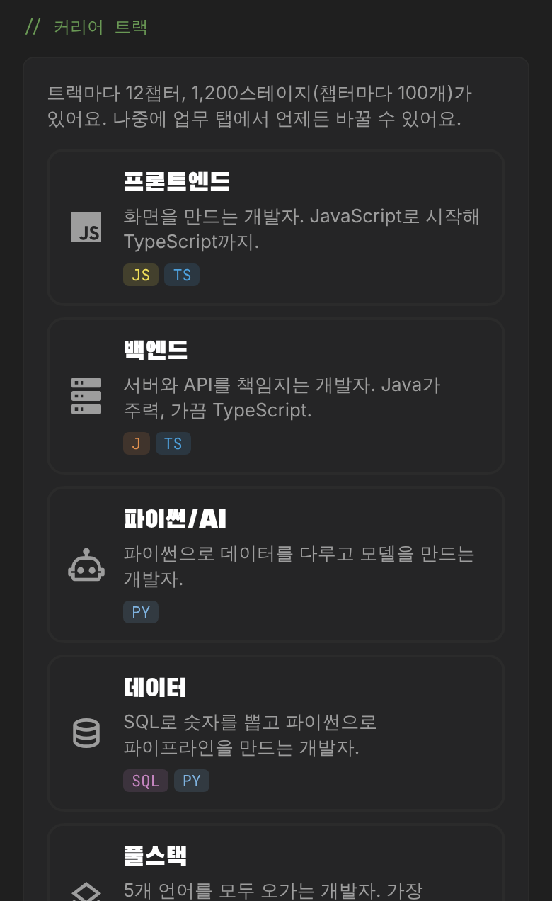
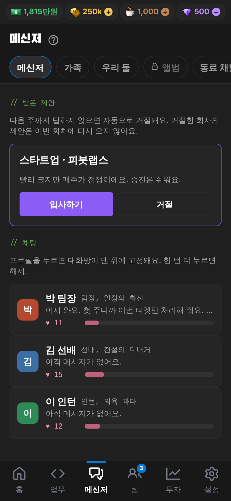
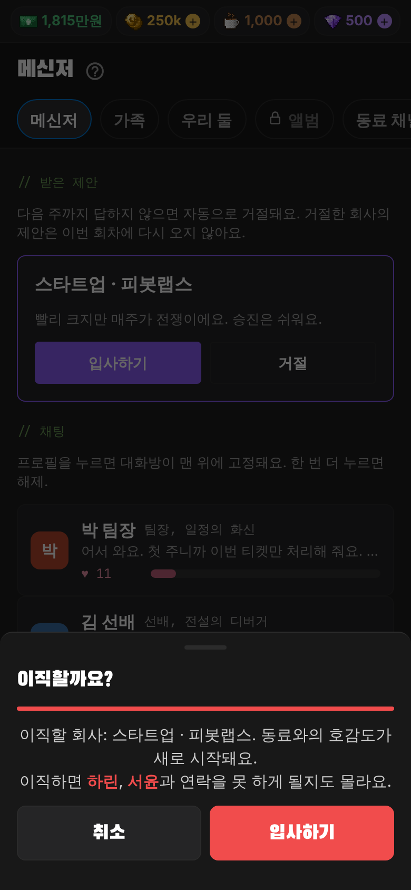
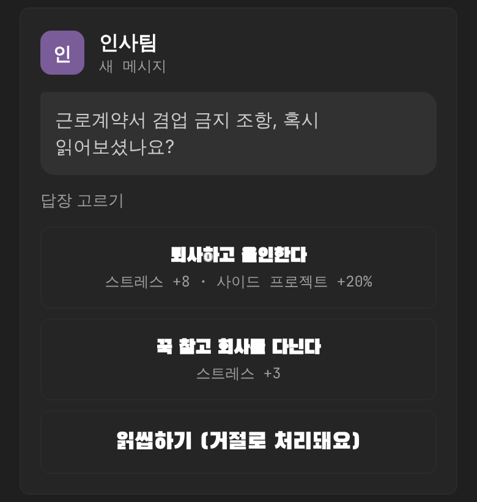
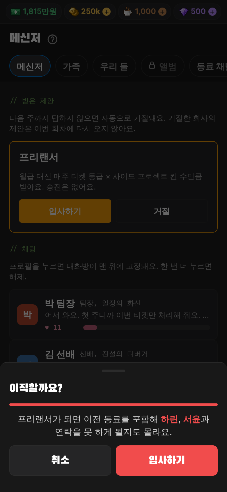

공략집 › 승진, 커리어, 퇴사 루트
승진, 커리어, 퇴사 루트
직급 10단계 승진 조건, 인사평가 점수 계산, 커리어 트랙, 회사 5곳과 사가, 이직, 창업, 프리랜서 퇴사 루트, 읽씹 규칙까지
- 📋 인사평가는 4, 16, 28, 40, 52, 64, 76, 88, 99주차, 딱 9번이에요. 한 번에 한 직급씩만 올라서 인턴 시작이면 9번 전부 붙어야 CTO예요.
- 🧮 평가 점수 = 성과 50% + 평판 30% + 팀장 호감도 20% + 보너스. 점수가 넘어도 직급별 승진 조건을 못 채우면 막혀요.
- 🏁 코인, 경력 포인트(CP)는 100주를 끝까지 마친 회차만 받아요. 창업, 칭호 엔딩처럼 일찍 끝나면 0이에요.
- 🚪 퇴사 루트는 연쇄 창업가(20주 퇴사, 잔고 2,000만 원), 프리랜서(칭호 없는 회차 24주~), 사이드 프로젝트 창업(사이드 90) 3가지예요.
회차 구조부터 알고 가요 🗓️#
한 회차는 100주예요. 매주 일정을 짜고, 티켓을 풀고, 메시지에 답하고, 한 주 마감하기를 누르면 한 주가 지나가요. 출발은 언제나 대기업, 주식회사 새벽커밋의 인턴이고, 시작 능력치는 코딩력 25, 집중력 60, 체력 80, 스트레스 20, 평판 20, 잔고 3,000,000원, 커밋 10이에요(회차 보너스로 올릴 수 있어요).
| 회차가 끝나는 방식 | 코인, CP | 도중에 충족한 엔딩 | 완주로 셈 |
|---|---|---|---|
| 100주를 끝까지 마침 | 받음 (직급 따라) | 전부 기록 ✅ | 예 |
| 칭호 이야기 엔딩으로 일찍 끝남 (연쇄 창업가의 상장, 텅장 창업 등 포함) | 0 | 그 엔딩 하나만 | 예 |
| 권고사직, 치킨집 사장, 사이드 프로젝트 창업(창업 대박, 폐업) | 0 | 그 엔딩 하나만 | 아니요 |
| 홈의 회차 종료 버튼 | 0 | 아무것도 안 남음 | 아니요 |
- 경력 포인트(CP) = 20 + 직급 번호 (인턴 20 … CTO 29). 회차 보너스 경력 관리로 +1 / +3 / +5.
- 코인 = 2,000 + 직급 번호 × 100 (인턴 2,000 … CTO 2,900). 퇴직금 적립으로 단계마다 +5%.
- 퇴사한 창업자는 직급이 없어서 인턴과 똑같이 계산돼요(CP 20, 코인 2,000).
- 화면을 만지며 플레이한 시간이 10분 미만인 회차는 CP, 코인, 커밋 XP, 일일 퀘스트가 없어요(엔딩은 남아요).
- 처음 보는 엔딩마다 카드팩이 나와요. 기본 엔딩은 레어 팩, 칭호 엔딩은 에픽 팩이고, 일찍 끝난 회차도 받아요.
회차 도중에 엔딩 충족! 배너가 뜬 엔딩(예: 회사 사가 결말, 해외 본사 입성, 사이드 프로젝트 인수)은 100주를 끝까지 마쳐야 도감에 함께 남아요. 칭호 엔딩이나 창업으로 회차가 일찍 끝나면 그 엔딩 하나만 기록되고, 앞서 모은 배너 엔딩은 사라져요. 수집이 목적이면 일찍 끝나는 선택은 마지막에 하세요.
엔딩 충족! 배너가 안 뜨는 조용한 엔딩도 있어요: 평범한 개발자, 만년 대리, AI에게 자리를 넘김, 귀농 개발자, 워라밸 마스터. 이 다섯은 100주차 최종 판정에서만 나오고, 더 앞 순위의 엔딩(결혼, CTO, 사이드 엔딩 등)을 하나라도 채우면 밀려나요.
직급 10단계와 월급 💼#
직급은 아래 10단계예요. 월급은 기본급 × 회사 배율 × (1 + 기술 연봉 보너스 + 연봉 인상 누적)이고, 주급은 월급 ÷ 4예요. 매주 생활비 450,000원이 빠져요(월 1,800,000원).
| 직급 | 대기업 월급 | 스타트업 (×0.8) | 외국계 (×1.4) | 아침 커밋 (×1.2) |
|---|---|---|---|---|
| 인턴 | 2,000,000원 | 1,600,000원 | 2,800,000원 | 2,400,000원 |
| 사원 | 3,000,000원 | 2,400,000원 | 4,200,000원 | 3,600,000원 |
| 주임 | 3,400,000원 | 2,720,000원 | 4,760,000원 | 4,080,000원 |
| 대리 | 4,000,000원 | 3,200,000원 | 5,600,000원 | 4,800,000원 |
| 과장 | 4,800,000원 | 3,840,000원 | 6,720,000원 | 5,760,000원 |
| 차장 | 5,600,000원 | 4,480,000원 | 7,840,000원 | 6,720,000원 |
| 부장 | 6,500,000원 | 5,200,000원 | 9,100,000원 | 7,800,000원 |
| 이사 | 8,000,000원 | 6,400,000원 | 11,200,000원 | 9,600,000원 |
| 상무 | 10,000,000원 | 8,000,000원 | 14,000,000원 | 12,000,000원 |
| CTO | 15,000,000원 | 12,000,000원 | 21,000,000원 | 18,000,000원 |
표는 기술, 인상 보너스가 하나도 없을 때의 월급이에요(10,000원 단위 반올림). 프리랜서는 월급이 없고 따로 계산해요(프리랜서 참고).
- 💰 기술 연봉 보너스: TypeScript +3%, React +5%, Java +3%, 클라우드 +5% (전부 합치면 +16%).
- 📈 연봉 협상으로 오른 몫과 이직할 때마다 +5%가 계속 쌓여요.
- 🎖️ 회차 보너스 연봉 협상의 달인은 주급을 +5% / +10% / +15% 올려 줘요.
- 🎫 직급이 오르면 티켓도 어려워져요: 인턴, 사원 1단계, 주임, 대리 2단계, 과장~부장 3단계, 이사부터 4단계.
인사평가 점수, 이렇게 계산돼요 📋#

평가 기준점 (이 점수를 넘어야 승진 후보)#
인턴에서 사원으로 갈 때만 30점 고정이고, 그 뒤로는 50 + 지금 직급 번호 × 5 + 회사 보정이에요. 스타트업은 −6이라 쉽고, 외국계는 +4라 빡빡해요.
| 지금 직급 → 다음 | 대기업, 아침 커밋 | 스타트업 | 외국계 |
|---|---|---|---|
| 인턴 → 사원 | 30 | 30 | 30 |
| 사원 → 주임 | 55 | 49 | 59 |
| 주임 → 대리 | 60 | 54 | 64 |
| 대리 → 과장 | 65 | 59 | 69 |
| 과장 → 차장 | 70 | 64 | 74 |
| 차장 → 부장 | 75 | 69 | 79 |
| 부장 → 이사 | 80 | 74 | 84 |
| 이사 → 상무 | 85 | 79 | 89 |
| 상무 → CTO | 90 | 84 | 94 |
평가 점수 공식#
점수 = 성과 점수 × 0.5 + 평판 × 0.3 + 팀장 호감도 × 0.2 + 보너스 (반올림)
- 성과 점수 = (지난 평가 이후 주간 성과의 평균 ÷ 12) × 100, 최대 100. 즉 매주 성과 12면 만점이에요.
- 평판, 팀장 호감도는 평가하는 그 순간의 값이에요.
- 보너스 (전부 더해져요):
- 발표 기술 +5, 리더십 기술 +5
- 외국계에서 비즈니스 영어 +3
- 장비 일정 관리 앱 구독 +3
- 사이드 프로젝트 50 이상 +3, 100 이상이면 +3 더
- 회차 보너스 발표 천재 +2 / +4 / +7
- 결혼 후 육아 중 사랑 효과 가정적인 개발자 +3
대기업 대리(기준 65)인데 주간 성과 평균 10.3, 평판 50, 팀장 호감도 60이면 → 42.9 + 15 + 12 = 70점. 통과예요. 발표 기술 하나만 있어도 +5라서 훨씬 여유로워져요.
주간 성과는 어디서 나와요?#
- 업무 하루 1.2, 야근 하루 2.2 (회사 성과 배율을 곱해요: 대기업, 아침 커밋 0.9, 스타트업 1.2, 외국계, 프리랜서 1).
- 티켓: S 6, A 4, B 2, C 1 (× 성과 배율). 티켓을 못 풀면 성과 −3, 평판 −3, 팀장 호감도 −5, 스트레스 +3.
- 팀 프로젝트 승리: ★1 1.5, ★2 2.5, ★3 4 (× 성과 배율, 한 주 최대 6).
- 메시지 답장 중 성과가 붙는 것도 있어요.
- 요일 효과: 같은 업무, 야근, 공부, 사이드를 3일 연속 넣으면 3일째부터 +20%, 월요일 −10%, 금요일 +10%, 야근 다음 날 업무, 야근은 성과, 평판 −30%, 주말 칸은 ×1.4, 평가 주간엔 성과 ×1.5.
요일 효과까지 넣어 계산한 일정별 한 주예요(대기업, 평가 주 아님, 장비, 회차 보너스, 메시지 제외).
| 일정 (월~금, 주말) | 일정 성과 | + 티켓 S | 스트레스/주 | 체력/주 |
|---|---|---|---|---|
| 기본 일정: 업무, 업무, 공부, 업무, 업무, 휴식 | 4.32 | 9.72 | +10.2 | −10.8 |
| 점심, 업무, 업무, 업무, 업무, 휴식 | 4.88 | 10.28 | −6.8 | −8.8 |
| 점심, 업무, 업무, 업무, 공부, 휴식 | 3.46 | 8.86 | −8.8 | −5.8 |
| 업무 5일, 휴식 | 6.07 | 11.47 | +12.2 | −13.8 |
| 업무, 야근, 휴식, 업무, 야근, 휴식 | 6.21 | 11.61 | +9.2 | −10.8 |
| 야근 5일, 휴식 | 8.32 | 13.72 | +32.2 | −38.8 |
스트레스에는 회사가 매주 더하는 몫(대기업 +2)이 들어 있어요. 평가 주간에는 일정 성과가 1.5배라 같은 일정이 훨씬 세져요(예: 점심, 업무 4, 휴식 → 7.32).
처음 깔려 있는 기본 일정(업무, 업무, 공부, 업무, 업무, 휴식)은 스트레스가 매주 +10쯤 쌓여요. 손대지 않으면 몇 주 만에 번아웃이 오고, 번아웃 3번이면 치킨집 사장 엔딩으로 회차가 끝나요. 실제로 기본 일정 그대로 돌린 시뮬레이션은 2,000번 중 2,000번 모두 번아웃 3번으로 치킨집 사장(가운데값 35주차, 가장 빠르면 28주차)였어요(시뮬레이션).
- 🍜 동료와 점심을 매주 1번: 팀장 호감도 +6, 스트레스 −15. 팀장 호감도가 50 이상인데 그 주에 점심이 없으면 −3이에요. 80 이상부터는 기대치 때문에 매주 −2라서 점심이 꼭 필요해요.
- ⭐ 평가 주간(4, 16, 28…주)에는 일정(업무, 야근)으로 얻는 성과가 1.5배예요. 이 주엔 업무를 몰아 넣으세요.
- 🎤 발표(커밋 80)는 평가 +5짜리라 가장 먼저 배울 만해요. 리더십(160, 발표 필요)도 +5.
- 🚀 사이드 프로젝트를 50까지 키우면 평가 +3, 100이면 +6이에요.
- 🎫 티켓은 직접 풀어서 S를 노리세요. 대충 처리는 최고가 A이고, 3주 연속부터 점수가 15씩 깎여요. 스트레스 70 이상이면 아예 못 써요.
연봉 협상: 뭘 눌러야 이득일까? 💸#
평가가 끝나면 승진 여부와 상관없이 연봉 협상이 나와요. 버튼에 확률이 그대로 적혀 있어요.
| 버튼 | 성공 확률 | 승진했을 때 | 승진 못 했을 때 | 실패하면 |
|---|---|---|---|---|
| 그대로 수락 | 100% | +3% | +1% | 없음 |
| 조금 더 요청 | 55% (협상 기술 75%) | +8% | +3% | 그래도 +2% |
| 크게 요구 | 30% + 평판 ÷ 400 (협상 기술 +20%p) | +15% | +6% | 0%, 팀장 호감도 −10 |
버튼의 확률 × 인상률로 계산한 평균 인상률이에요(승진했을 때). 실제 함수로 20,000번씩 굴려 본 결과도 0.1%p 안에서 같았어요.
| 상황 | 그대로 수락 | 조금 더 요청 | 크게 요구 | 크게 요구의 평균 팀장 호감도 |
|---|---|---|---|---|
| 협상 기술 없음, 평판 20 | 3.00% | 5.30% | 5.25% | −6.5 |
| 협상 기술 없음, 평판 60 | 3.00% | 5.30% | 6.75% | −5.5 |
| 협상 기술 없음, 평판 100 | 3.00% | 5.30% | 8.25% | −4.5 |
| 협상 기술, 평판 60 | 3.00% | 6.50% | 9.75% | −3.5 |
| 협상 기술, 평판 100 | 3.00% | 6.50% | 11.25% | −2.5 |
조금 더 요청은 실패해도 +2%라 손해가 없어요. 무조건 이쪽이 그대로 수락보다 나아요. 크게 요구는 평균은 더 높지만 팀장 호감도가 깎여서, 부장부터 PM 호감도 90~100이 승진 조건인 걸 생각하면 고직급에선 조금 더 요청이 안전해요.
직급별 승진 조건 총정리 🪜#

평가 점수가 기준점을 넘고 아래 조건을 전부 채워야 승진해요. 점수만 넘으면 점수는 충분했지만 승진 조건이 부족해요가 떠요.
| 다음 직급 | 회차 안 조건 | 회차 밖 조건 (이전 기록 인정) |
|---|---|---|
| 사원 | 코딩력 20, 집중력 10, 스트레스 80 이하 | 없음 |
| 주임 | 기술 1개, 코딩력 30, 집중력 20, 스트레스 80 이하 | 없음 |
| 대리 | 기술 2개, 코딩력 40, 평판 20, 스트레스 80 이하 | 없음 |
| 과장 | 기술 3개, 평판 40 | 없음 |
| 차장 | 기술 5개, 코딩력 60, 주니어(인턴) 호감도 50 | 클래식 챌린지 150단계까지, 커리어 트랙 한 분야 40단계 이상 |
| 부장 | 기술 7개, 평판 60, PM 호감도 90 | 클래식 300단계까지, 커리어 트랙 풀스택 9챕터 80단계 |
| 이사 | 리더십 기술, PM 호감도 95 | 서바이벌 보통 클리어, 클래식 370단계까지, 커리어 트랙 프론트엔드 10챕터 85단계 |
| 상무 | 기술 10개, 평판 75, 코딩력 75, PM 호감도 100 | 클래식 440단계까지, 커리어 트랙 백엔드 11챕터 90단계 |
| CTO | 기술 11개 전부, 평판 100, 코딩력 100, PM 호감도 100, 이번 회차 티켓 S등급 95% 이상 | 클래식 1~500 전부 ★★★, 커리어 트랙 5개 분야 전 단계 ★★★, 팀 프로젝트 오픈소스 #12 프레임워크 2.0 ★★★ |
과장까지는 회차 안에서만 채우면 되지만, 차장부터는 클래식, 커리어 트랙 기록이 필요해요. 회차만 열심히 돌리면 과장에서 멈춰요. 클래식 스테이지와 커리어 트랙는 회차 밖에서 꾸준히 밀어 두세요. 기록은 어느 회차에서 깼든 인정돼요.
평가는 9번, 승진은 평가마다 1단계예요. 인턴으로 시작하면 단 한 번도 미끄러지면 안 돼요. 4주차 첫 평가(기준 30)부터 조건을 맞춰 두세요. 회차 보너스 경력직 입사(200 / 400 CP)로 사원이나 주임에서 시작하면 1~2번 여유가 생겨요.
기술 11개 (커밋으로 배워요)#

| 기술 | 커밋 | 먼저 필요 | 효과 |
|---|---|---|---|
| Git 마스터 | 50 | - | 오답 페널티 10초 → 8초 |
| TypeScript | 65 | - | TS 티켓, 연봉 +3% |
| Python | 65 | - | Python 티켓 |
| SQL | 65 | - | SQL 티켓 |
| 발표 | 80 | - | 인사평가 +5 |
| Java | 80 | - | Java 티켓, 연봉 +3% |
| 비즈니스 영어 | 95 | - | 외국계 제안을 받을 수 있어요 (외국계에서 평가 +3) |
| 협상 | 95 | 발표 | 연봉 협상 성공률 +20% |
| React | 95 | TypeScript | 사이드 프로젝트 ×1.2, 연봉 +5% |
| 클라우드 | 130 | SQL | 매주 스트레스 −1, 연봉 +5% |
| 리더십 | 160 | 발표 | 인사평가 +5, 인턴 호감도 상승 1.5배 (이사 승진 필수) |
합계 980커밋이면 11개를 다 배워요. 공부(하루 커밋 5)가 제일 빨라요. 11개를 전부 배우면 엔딩 전설의 아키텍트도 따라와요.
커리어 트랙 5개 분야 🛤️#

커리어 트랙는 코드 리뷰(O/X) 모드예요. 분야마다 12챕터 × 100단계 = 1,200단계, 5개 분야 합쳐 6,000단계예요. 모든 챕터가 처음부터 열려 있고, 챕터 안에서는 한 단계씩 열려요.
| 분야 | 언어 | 챕터 (1 → 12) |
|---|---|---|
| 프론트엔드 | JavaScript, TypeScript | 첫 버튼, 폼 검증, 목록 렌더링, 상태 관리, API 연동, 라우팅, 타입 도입, 컴포넌트 설계, 성능 최적화, 디자인 시스템, 대규모 리팩터링, 프론트 리드 |
| 백엔드 | Java, TypeScript | Hello 서버, REST API, DB 연결, 인증, 트랜잭션, 캐시, 배치 작업, 메시지 큐, MSA 분리, 장애 대응, 대용량 트래픽, 백엔드 리드 |
| 파이썬/AI | Python | 파이썬 기초, 리스트와 딕셔너리, 파일 처리, 크롤러, 데이터 전처리, 시각화, 첫 모델, 특성 공학, 딥러닝, LLM 연동, 모델 서빙, AI 리드 |
| 데이터 | SQL, Python | SELECT, 조인, 집계, 서브쿼리, 스키마 설계, 마이그레이션, ETL, 대시보드, 데이터 웨어하우스, 실시간 처리, 데이터 품질, 데이터 리드 |
| 풀스택 | JavaScript, TypeScript, Python, Java, SQL | 사이드 프로젝트, 랜딩 페이지, 회원가입, 결제, 관리자 페이지, 통계, 알림, 검색, 추천, 글로벌 출시, 스케일업, CTO |
- ⭐ 1~80단계는 정확도로 별을 줘요: 80% 이상 ★★★, 60% 이상 ★★, 그 아래 ★. 아무렇게나 찍으면(약 50%) ★ 하나예요.
- 🔥 81~100단계는 지옥 구간이라 시간으로 별을 줘요. 오류가 100개에서 1,000개까지 늘고, 오답 1번에 30초가 붙어요.
- ☕ 새로 얻은 별 1개마다 커피 1잔(단계당 최대 3잔).
- 📈 승진에 쓰이는 단계: 차장(아무 분야 40단계), 부장(풀스택 9챕터 80단계), 이사(프론트엔드 10챕터 85단계), 상무(백엔드 11챕터 90단계), CTO(전 분야 전 단계 ★★★).
차장 조건의 한 분야 40단계는 챕터 상관없이 그 분야에서 깬 단계 수예요. 그리고 부장~상무 조건은 챕터 1부터 다 깰 필요 없이 그 챕터의 그 단계만 깨면 돼요(챕터 안에서는 한 단계씩 열리니 그 단계 앞까지는 순서대로 깨야 해요). 커리어 트랙 자체 공략은 시작 가이드에 있어요.
회사 5곳 비교 🏢#
| 회사 | 월급 배율 | 매주 스트레스 | 성과 배율 | 사이드 배율 | 평가 기준 | 들어가는 법 |
|---|---|---|---|---|---|---|
| 대기업, 주식회사 새벽커밋 | ×1 | +2 | ×0.9 | ×1 | ±0 | 모든 회차의 시작 (야근 수당 하루 30,000원) |
| 스타트업, 피봇랩스 | ×0.8 | +4 | ×1.2 | ×1.3 | −6 | 헤드헌터 (12주~, 코딩력 90) |
| 외국계, 글로벌테크 지사 | ×1.4 | +3 | ×1 | ×1 | +4 | 헤드헌터 (16주~, 비즈니스 영어 + 코딩력 90) |
| 아침 커밋 | ×1.2 | +2 | ×0.9 | ×1 | ±0 | 헤드헌터 대기업 경력직 (20주~, 첫 회사를 떠난 뒤) |
| 프리랜서 | 월급 없음 | +1 | ×1 | ×1.2 | 승진 없음 | 헤드헌터 (24주~, 평판 70, 칭호 없는 회차) |
- 스타트업: 승진은 제일 쉽지만 월급 0.8배, 스트레스 +4. 비밀연애 히로인 소현을 만나는 곳이에요.
- 외국계: 월급 1.4배로 최고. 평가는 빡빡하지만 영어 보너스 +3이 있어요. 소피가 있는 곳.
- 아침 커밋: 경쟁 대기업. 월급 1.2배에 사내 감사가 업계 최강으로 깐깐해요. 회사 사가 대신 감사관 여은혜의 감사가 이야기예요. 의심도가 100이 되면 그 주에 징계 해고로 회차가 끝나니 조심하세요.
이직과 헤드헌터 🤝#
헤드헌터 메시지는 주 마감 화면에서만 와요. 제안을 받아 본다를 누르면 메신저 탭 맨 위 받은 제안에 회사가 올라오고, 입사하기나 거절을 고르면 돼요.

| 제안 | 오는 조건 | 오는 방식 |
|---|---|---|
| 스타트업, 피봇랩스 | 12주차~, 코딩력 90 이상, 스타트업에 가 본 적 없음 | 조건을 채운 첫 주에 반드시 |
| 외국계, 글로벌테크 지사 | 16주차~, 비즈니스 영어, 코딩력 90 이상, 외국계에 가 본 적 없음 | 조건을 채운 첫 주에 반드시 |
| 아침 커밋 (대기업 경력직) | 20주차~, 지금 스타트업, 프리랜서, 외국계, 아침 커밋에 가 본 적 없음 | 조건을 채운 첫 주에 반드시 |
| 프리랜서 | 24주차~, 평판 70 이상, 칭호 없는 회차 | 조건을 채운 첫 주에 반드시, 회차당 1번 |
| 해외 본사 (→ 외국계 제안) | 60주차~, 비즈니스 영어, 코딩력 75 이상 | 가끔 무작위로 |
| 카운터 오퍼 | 30주차~, 평판 55 이상 | 가끔 무작위로. 협상하면 60%로 +1,500,000원, 팀장 −5, 실패하면 팀장 −10, 스트레스 +6 |
회사 사가 선택지에서 제안이 오기도 해요(대기업 조용히 이력서를 업데이트한다 → 외국계, 스타트업 정산 → 다른 회사 등).

이직하면 바뀌는 것#
- ✅ 직급은 그대로 들고 가요. 연봉 인상 누적 +5%(프리랜서로 갈 때는 없음).
- 🔄 새 회사 동료 호감도는 5~15에서 새로 시작, 이번 분기 성과도 초기화돼요. 팀장 호감도가 평가 점수의 20%이고 부장부터는 PM 호감도 90~100이 조건이라, 고직급일수록 이직 직후 평가가 힘들어요.
- 👋 이전 회사 사람들(팀장, 선배, 후배, 인사팀, 대표)은 메신저에서 바로 사라져요.
- 💔 회사 히로인: 첫 회사의 하린, 서윤, 외국계의 소피, 아침 커밋의 여은혜는 썸 이상이 아니면 연락이 끊겨요. 스타트업의 소현은 스타트업을 떠나면 끝이에요.
- 🚫 한 번 떠난 회사는 이번 회차에 다시 못 가요. 거절하거나 답을 안 한 회사의 제안도 다시 안 와요.
외국계 제안 조건(비즈니스 영어 + 코딩력 90)이 곧 엔딩 해외 본사 입성 조건(외국계 재직 + 코딩력 90 + 비즈니스 영어)이에요. 헤드헌터를 통해 외국계에 들어가는 순간 엔딩 충족!이 떠요. 100주까지 마치면 도감에 남아요.
회사 사가: 회사마다 큰 사건이 터져요 🎬#
대기업, 스타트업, 외국계, 프리랜서에는 6주차부터 60주대까지 이어지는 이야기가 있어요. 단계는 대략 6 → 16 → 28 → 40(38) → 54(50) → 62주에 열리고, 앞 단계의 선택에 따라 결말이 갈려요. 결말은 도중 충족 엔딩이라 회차는 계속돼요.
- 사가 메시지는 답해야 주가 넘어가는 중요 메시지예요. 읽씹하면 그 회사 이야기는 이번 회차 끝이에요.
- 도중에 이직하면 사가가 멈춰요(그 회사 조건이 안 맞음). 연쇄 창업가로 퇴사해도 사가는 오지 않아요.
- 단계마다 정해진 건 가장 이른 주차예요. 이직해서 들어간 회사는 그 주차가 이미 지났으면 입사 뒤 앞 단계부터 차례로 와요.
- 아침 커밋에는 사가가 없어요. 대신 여은혜의 감사가 이어져요.
대기업, 주식회사 새벽커밋: 결제 대장애#
6주차 새벽 결제 장애로 시작해 책임 공방(16주) → 감사(28주) → TF 리드 제안(40주) → 54주 결말이에요.
스포일러: 대기업 사가 결말 3개와 갈림길
- 6주 장애: 잠옷 바람으로 접속해 직접 롤백한다 60% 성공(실패해도 다음 단계는 열려요), 김 선배에게 전화한다, 장애 공지 템플릿부터 채운다.
- 16주 책임 공방: "네, 그렇게 하시죠"(인턴 탓, 인턴 호감도 −25), "제 온콜이었습니다…"(책임짐), 레거시 모듈 폭로 50%(실패하면 책임진 걸로).
- 28주: 인턴 탓을 했다면 감사에서 인정하고 사과(징계) / "팀장님 지시였습니다" 폭로 50% / 끝까지 "기억이 안 납니다" 35%. 실패하면 징계. 아니면 일반 감사.
- 40주 TF 리드(징계가 없을 때): 수락한다 75% 성공.
- 조건
- 징계 없이 감사를 넘기고 40주 TF 리드 수락한다 성공 → 54주 특별 승진 메시지.
- 보상
- 답에 따라 3,000,000원 또는 1,500,000원 + 평판. 직급이 오르는 건 아니에요.
- 조건
- 징계 없이 감사를 넘기고 TF 리드를 정중히 사양하거나 수락했다 실패 → 54주 메시지. 조용히 이력서를 업데이트한다를 고르면 외국계 제안도 와요.
- 조건
- 인턴 탓 → 감사에서 징계 → 54주 지방 전보 메시지에서 받아들이고 내려간다. 사표를 내고 스타트업으로 간다를 고르면 엔딩 없이 바로 스타트업으로 옮겨요.
스타트업, 피봇랩스: 데모에서 엑시트까지#
6주 투자 데모 → 16주 투자 유치 → 26주 크런치 → 38주 번아웃 위기 또는 연봉 반납 → 50주 인수 제안 → 62주 결말이에요.
스포일러: 스타트업 사가 결말 3개와 갈림길
- 16주 투자 유치에서 스톡옵션을 더 달라고 한다 60% 성공이 대박 엑시트의 열쇠예요.
- 26주 크런치: 갈아 넣는다나 이 인턴과 배포 자동화 실패(45%)면 38주에 선배 번아웃 이야기로, 아니면 연봉 반납 이야기로 가요.
- 50주 인수 제안: 찬성 또는 서비스 유지 조건으로 역제안(45%)이 성공하면 매각, 반대나 역제안 실패면 피벗.
- 조건
- 스톡옵션 확보 + 50주 매각 → 62주 정산 메시지.
- 보상
- 정산금 30,000,000원. 인수한 회사로 출근한다는 이직 제안도 붙고, 정산금으로 일단 쉰다는 2주 휴식.
- 조건
- 스톡옵션 없이 매각 → 62주 고용 승계 메시지.
- 보상
- 3,000,000원 + 다른 회사 제안.
- 조건
- 50주 인수에 반대 또는 역제안 실패 → 62주 피벗 메시지. 끝까지 함께한다 40%면 +10,000,000원.
외국계, 글로벌테크 지사: 이관 소문#
6주 타운홀 → 16주 이관 소문 → 28주 희망퇴직 안내 → 40주 노조 총회, 본사 1:1, 버티기 → 54주 결말이에요.
스포일러: 외국계 사가 결말 4개와 갈림길
- 28주 희망퇴직 안내에서 노조 설립 서명지에 이름을 쓴다 = 노조 루트.
- 16주 본사 레포에 PR(70%) 또는 28주 해외 허브 이관 TF에 자원(50%)이 성공하고 노조 서명을 안 했다면 40주 본사 1:1로. 여기서 영어로 정면 승부한다 60% 성공이면 본사 오퍼.
- 둘 다 아니면 40주 버틴다 / 헤드헌터에게 전화를 건다(스타트업 제안, 이미 스타트업을 다녀왔으면 제안 없음) → 54주 지사 해산.
- 조건
- 노조 서명 → 40주 노조 총회 → 54주 교섭 메시지(어느 답이든).
- 조건
- 본사 PR이나 이관 TF 성공 → 1:1 영어로 정면 승부 성공 → 54주 오퍼에서 사인한다 (+5,000,000원).
- 조건
- 같은 길로 본사 오퍼까지 가서 지사에 남은 동료들을 생각해 거절한다.
- 조건
- 노조 서명도, 본사 오퍼도 없음 → 54주 지사 해산 메시지(어느 답이든).
프리랜서: 쇼핑몰 외주와 잔금 체불#
6주 쇼핑몰 외주 → 16주 기능 추가 → 28주 잔금 체불 → 40주 소송, 피해자 모임, 재의뢰 → 54주 결말이에요. 프리랜서는 칭호 없는 회차에만 될 수 있으니 이 사가도 칭호 없는 회차 전용이에요.
스포일러: 프리랜서 사가 결말 2개와 갈림길
- 6주 "계약서와 선금 30%부터요" 60% 성공이면 계약서 확보(+9,000,000원) → 40주 소송에서 유리해요.
- 28주 잔금 체불: 내용증명을 보낸다 = 소송 루트, 개발자 커뮤니티에 사연을 올린다 = 피해자 모임 루트, 유지보수 중단을 정식으로 통보한다 45%면 21,000,000원을 바로 받고 재의뢰 루트.
- 조건
- 40주 단계에서 피해자 대표를 맡지 않은 모든 길 → 54주 에이전시 제안(어느 답이든: 에이전시 / 정규직 제안 / 단가 인상).
- 조건
- 28주 커뮤니티에 사연 → 40주 피해자 12명 메시지에서 대표를 맡는다 → 54주 단체소송 승리(+21,000,000원).
퇴사 루트 ① 연쇄 창업가 🚀#
칭호 연쇄 창업가를 끼고 시작하면 친구가 앱 창업을 꼬셔요. 핵심은 20주차 인사팀 메시지예요.
- 2주~ 아이디어당장 시작하자 또는 시장 조사부터. 회사 일이 먼저야를 고르면 이야기가 끝나요.
- 7주~ MVP직접 풀코딩 또는 노코드 툴로 빠르게(−100,000원).
- 12주~ 기업 고객 / 16주~ 엔젤 투자기업용으로 간다(+1,000,000원) 또는 투자 받는다(+3,000,000원)로 시드를 확보해요. 시드가 있어야 40주 인수 제안과 45주 런웨이 이벤트가 와요.
- 20주~ 겸업 금지 조항퇴사하고 올인한다 (잔고 2,000만 원 필요, 스트레스 +8). 돈은 보여 주기만 하면 되고 빠져나가지 않아요. 잔고가 모자라면 버튼이 막혀서 꾹 참고 회사를 다닌다만 남는데, 그러면 창업 이야기는 끝이에요.
- 26주~ 피벗AI 플랫폼으로 피벗 / 반찬 배달로 피벗 / 버틴다.
- 34주~ 시리즈 A화려한 피치덱 50% (+5,000,000원) 또는 솔직한 숫자 60% (+3,000,000원). 딱 한 번만 와요.
- 45주~ 런웨이 2.3개월직원을 줄인다(+2,000,000원, 운영비 절반, 상장 불가) / 대출로 버틴다(+3,000,000원, 이자 매주 100,000원) / 대표 월급을 0원으로(+1,000,000원).
- 52~60주 결말 메시지아래 엔딩 카드 참고. 엔딩을 고르면 그 자리에서 회차가 끝나요.

회차 보너스 없이 시작하면 20주차 잔고는 생각보다 적어요. 실제 함수로 2,000번씩 돌려 본 결과(매주 점심 1번, 업무 3, 사이드 1, 주말 휴식, 시드 투자 2번 다 받음), 20주차 잔고는 보너스 없음 약 1,190만 원, 부모님 지원금 1단계 약 1,490만 원, 2단계 약 1,990만 원(딱 몇만 원 모자라 퇴사 성공 0%), 3단계 약 2,870만 원(100%)이었어요. 2단계라면 점심(주급의 15%)을 줄여 아껴야 넘겨요. 같은 2단계라도 20주 동안 점심을 휴식으로 바꾸면 20주차 잔고가 약 2,076만 원이 돼서 100% 퇴사할 수 있었어요.
퇴사 후 돈 계산 (여기가 진짜 게임)#
퇴사하면 월급이 0이 되고, 매주 결산이 이렇게 바뀌어요.
- 앱 매출 = 사이드 20 이상일 때 (사이드 ÷ 100)² × 400,000원 × 1.5 (사이드 100이면 600,000원). 회사원 때의 사이드 수입은 이걸로 바뀌어요.
- 피벗 매출: 반찬 250,000원(바로), AI 500,000원(시리즈 A를 받은 뒤에만, 그 전엔 0), 버틴다 100,000원.
- 운영비: 500,000원, 시리즈 A 뒤 900,000원. 직원 감축이면 절반, 대출이면 +100,000원.
- 생활비 450,000원은 그대로 빠져요.
- 💡 퇴사 뒤엔 업무를 해도 월급이 없어요. 매출은 사이드 진행도에서 나오니 일정을 사이드 위주로 바꾸세요(사이드 3일 연속이면 +20%).
- 회사 사람들(팀장, 선배, 후배, 인사팀, 대표) 메시지, 회사 사가, 헤드헌터는 더 이상 오지 않아요. 창업 이야기와 히로인, 엄마, 친구 메시지는 계속 와요. 첫 회사의 하린, 서윤(썸 미만)은 연락이 끊겨요.
주간 손익(앱 매출 + 피벗 − 운영비 − 생활비)을 사이드 진행도별로 계산하면 이래요.
| 상태 | 사이드 60 | 사이드 80 | 사이드 100 |
|---|---|---|---|
| 반찬 피벗 | −484,000 | −316,000 | −100,000 |
| 반찬 피벗 + 시리즈 A | −884,000 | −716,000 | −500,000 |
| AI 피벗 (시리즈 A 전) | −734,000 | −566,000 | −350,000 |
| AI 피벗 + 시리즈 A | −634,000 | −466,000 | −250,000 |
| 버틴다 | −634,000 | −466,000 | −250,000 |
| 반찬 + 직원 감축 | −234,000 | −66,000 | +150,000 |
| AI + 시리즈 A + 직원 감축 | −184,000 | −16,000 | +200,000 |
단위는 원/주. 메시지로 들어오고 나가는 돈은 빠진 값이에요.
매주 결산 뒤 잔고가 0원 이하가 되면 그 자리에서 텅장 창업 엔딩으로 회차가 끝나요. 시리즈 A는 한 번에 300~500만 원을 주지만 운영비가 매주 400,000원 늘어서, 반찬 피벗에선 오히려 독이 될 수 있어요.
창업 시뮬레이션 결과#
퇴사 뒤 일정을 사이드, 사이드, 사이드, 운동, 사이드, 휴식으로 두고(사이드가 금방 100이 돼요), 피벗, 런웨이 선택만 바꿔 각각 2,000번 돌렸어요(부모님 지원금 3단계, 시리즈 A는 솔직한 숫자라 약 61%가 성공).
| 선택 (피벗 / 45주 런웨이 / 60주 상장) | 결과 | 100주 잔고 (가운데값) |
|---|---|---|
| 반찬 / 대표 월급 0원 / 아직 이르다 | 100% 버텨낸 창업가 | 시리즈 A 받음 약 48만 원, 못 받음 약 2,428만 원 |
| AI / 대표 월급 0원 / 상장 도전 | 11.9% 상장 (시리즈 A 받은 회차의 19.5%), 나머지 버텨낸 창업가 | 시리즈 A 받음 약 1,329만 원, 못 받음 약 559만 원 |
| AI / 직원 감축 / (상장 불가) | 100% 버텨낸 창업가 | 시리즈 A 받음 약 4,149만 원, 못 받음 약 2,059만 원 |
| 버틴다 / 대표 월급 0원 / 아직 이르다 | 시리즈 A를 받은 회차는 100% 텅장 창업(84주), 못 받은 회차만 버텨낸 창업가 | 못 받음 약 1,290만 원 |
| 반찬 / 대표 월급 0원 / 아직 이르다, 단 퇴사 뒤 일정을 업무, 업무, 휴식, 업무, 업무, 휴식으로 | 사이드가 79에서 멈추고, 시리즈 A를 받은 회차는 100% 텅장 창업(75주), 못 받은 회차만 버텨낸 창업가 | - |
- 💸 가장 안전한 건 AI 피벗 + 직원 감축이에요. 대신 감축하면 상장 메시지가 안 와요.
- 📈 상장을 노린다면 AI 피벗이 짝이에요. AI 매출 500,000원은 시리즈 A 뒤에만 나오니, AI인데 시리즈 A를 놓치면 돈이 가장 빨리 줄어요.
- 🪤 버틴다 + 시리즈 A는 함정이에요. 운영비 900,000원을 못 버텨서 84주에 텅장이 나요. 텅장 창업 엔딩을 모으고 싶을 때만 쓰세요.
- 🍱 반찬 피벗은 시리즈 A를 받으면 거의 0원까지 내려가요. 52주 반찬가게 엔딩을 노리는 루트로 쓰는 게 좋아요.
연쇄 창업가 엔딩 6개#
- 조건
- 퇴사 + 피벗 + 시리즈 A 성공 + 직원 감축 안 함 → 60주 증권사 메시지 상장에 도전한다 20%. 실패하면 −2,000,000원, 스트레스 +15이고 다시 오지 않아요. 아직 이르다는 이야기 끝.
- 조건
- 시드 확보 → 40주 인수 제안 일단 얘기 들어본다 → 퇴사 → 55주 계약서 서명한다.
- 조건
- 퇴사 + 반찬 배달로 피벗 → 52주 구독자 1만 명 메시지에서 반찬 사업에 올인.
- 조건
- 퇴사 + 피벗(아무거나) → 58주 경력직 제안에서 창업을 접고 취직한다.
- 조건
- 퇴사 후 주 결산에서 잔고가 0원 이하. 퇴사해 놓고 아직 이르다로 이야기를 접어도 돈은 계속 빠지니, 자연스럽게 이리로 가요.
- 조건
- 퇴사하고 다른 창업가 엔딩 없이 잔고를 0원 위로 지켜 100주를 마침. 100주를 마치니 코인 2,000, CP 20을 받고, 도중 충족 엔딩도 다 남아요.
퇴사한 창업자는 직급이 창업자 (직급 없음)으로 바뀌어서 인사평가가 없고, CTO, 워라밸 마스터, 만년 대리 엔딩도 안 나와요. 상장, 인수합병, 반찬가게, 다시 직장인, 텅장 창업은 100주 전에 끝나니 코인, CP는 0이에요.
퇴사 루트 ② 사이드 프로젝트 창업 💡#
칭호와 상관없이, 사이드 프로젝트가 90 이상이 되면 친구가 네 사이드 프로젝트 투자하고 싶다는 사람이 있어. 회사 나올래?라고 해요(무작위로 오고, 회차당 1번).
- 창업한다!를 누르면 그 즉시 회차가 끝나요. 그 순간 사이드 90, 코딩력 90, 잔고 1억 원, 평판 80을 모두 넘으면 대박, 하나라도 모자라면 폐업이에요.
- 아직은 회사에 남는다를 고르면 이 기회는 다시 오지 않아요.
- 조건
- 창업한다! 순간 사이드 90, 코딩력 90, 돈 100,000,000원, 평판 80 모두 이상.
- 조건
- 창업한다! 순간 위 4개 중 하나라도 미달.
회사를 나가지 않고 사이드 프로젝트만 키워도 엔딩이 나와요. 사이드 수입은 사이드 20부터 매주 (사이드 ÷ 100)² × 400,000원이고, 25, 50, 75, 100에서 한 번씩 보상이 있어요(75에서 +5,000,000원).
- 조건
- 사이드 100 + 평판 70 이상 (도중 충족).
- 조건
- 사이드 100 + 그 순간 평판 70 미만 (도중 충족).
- 조건
- 사이드 100 + 평판 80 이상 (도중 충족, 사이드 프로젝트 인수와 같이 나와요).
사이드 100 엔딩들은 도중 충족이라 100주를 마쳐야 남아요. 사이드 프로젝트 창업(즉시 종료)까지 노린다면 다른 회차로 나누는 게 좋아요.
퇴사 루트 ③ 프리랜서와 디지털 노마드 🏝️#
프리랜서 제안은 칭호를 끼지 않은 회차에서 24주차 이후 평판 70이 되면 와요(회차당 1번). 칭호를 낀 회차에는 절대 오지 않아요.
- 💵 월급 대신 매주 티켓 등급 단가 × 그 주 사이드 프로젝트 칸 수를 받아요: S 1,000,000, A 700,000, B 450,000, C 200,000원. S에 사이드 6칸이면 주 6,000,000원.
- 📛 직급 대신 프리랜서로 표시되고, 승진, 인사평가가 없어요. CTO, 만년 대리 엔딩도 없어요.
- 🔕 팀장, 선배, 후배, 인사팀, 대표 메시지가 끊기고(프리랜서용 메시지만), 매주 스트레스는 +1로 가장 낮아요. 사이드 배율 ×1.2.
- 프리랜서 전용 사가(위)가 프리랜서가 되자마자 시작돼요(앞 단계 주차가 이미 지나 있어서 몇 주 사이에 이어서 와요). 아침 커밋 헤드헌터 제안도 와요.
- 조건
- 칭호 없는 회차에서 프리랜서로 현금 200,000,000원 이상.
- 공략
- 티켓 S + 사이드 칸을 최대로 넣으면 주 600만 원. 사가에서 계약서, 소송으로 받는 1,000~2,000만 원대 돈도 크게 도와요. 칭호 회차에서는 프리랜서 제안이 안 오니, 이 엔딩은 칭호 없는 회차 전용이에요.

일찍 끝나는 칭호 루트 ⏱️#
칭호 이야기의 엔딩 선택지를 고르면 그 자리에서 회차가 끝나요. 특히 아래 4개 칭호는 20~34주에 끝나도록 만들어져 있어서 빨리 도감을 채우기 좋지만, 코인, CP는 0이에요(완주로는 세요). 각 엔딩의 정확한 갈림길은 칭호 글에 있어요.
| 칭호 | 엔딩이 열리는 가장 이른 주차 |
|---|---|
| 치킨집 개발자 | 기름값 폭등 20주, 배달 앱 창업 24주, 치킨 프랜차이즈 CTO 26주, 가업 승계 30주 (모두 12주 2호점 투자 1,500만 원 필요) |
| 인디 게임 개발자 | 퍼블리셔 계약 22주, 인디 게임 대박 26주, 전설의 모더 27주, 영원한 얼리 액세스 34주 |
| 이직의 달인 | 카운터 오퍼의 승자 22주, 빅테크 입성 26주, 헤드헌터가 됐다 30주, 이력서가 소설이 됐다 34주 |
| 코딩 강사 | 질문 지옥 24주, 베스트셀러 저자 26주, 코딩 학원 원장 28주, 모두의 사수 32주 |
| 그 밖의 칭호 | 개발 인플루언서 54~64주, 오픈소스 메인테이너 52~62주, 연쇄 창업가 52~60주, 화이트해커 56~64주, AI 연구자 52~62주, 디지털 노마드 54~60주 |
칭호 이야기 메시지를 읽씹하거나, 회사 일이 먼저야, 꾹 참고 회사를 다닌다, 아직 이르다처럼 이야기를 접는 답을 고르면 그 회차의 칭호 이야기는 끝이에요.
회차가 갑자기 끝나는 함정 🪤#
- 조건
- 한 회차에 번아웃 3번. 주 마감 때 스트레스가 100이면(그 주에 한 번이라도 100을 찍었으면) 번아웃이에요: 평판 −10, 머리카락 −5, 2주 쉬고, 스트레스는 40으로.
- 막는 법
- 스트레스 70부터 매주 머리카락도 빠져요. 휴식, 운동, 점심으로 70 아래를 지키세요. 장비 진정해 친구, 회차 보너스 실손보험, 황금 낙하산이 번아웃을 막거나 줄여 줘요.
- 조건
- 티켓을 안 풀거나 대충 처리로 C를 받은 주가 5주 연속. 3주째부터 팀장이 경고해요.
- 막는 법
- 직접 푼 티켓, 머신러닝 자동 처리, B 이상이면 카운트가 0으로 돌아가요. 쉬는 주는 세지 않아요.
체력이 0이 되면 다음 주는 병가예요(그 주 일정, 티켓 없음). 구사일생 장비가 한 번 막아 줘요.
읽씹 규칙 총정리 📵#
메시지를 읽씹하기 (거절로 처리돼요)로 넘기거나, 알림 N개 지우기로 지우거나, 답하지 않은 채 다음 주를 마감하면 전부 읽씹이에요. 누가 보냈느냐에 따라 잃는 게 달라요.
| 보낸 사람 / 메시지 | 읽씹하면 |
|---|---|
| 히로인 (일상 메시지) | 그 히로인 호감도 −15 |
| 관계를 끝내는 답(이별, 아기 거절, 이혼)이 들어 있는 메시지 | 그 답을 고른 것으로 처리 (관계가 끝날 수 있어요) |
| 호감도 0이 된 히로인의 작별 …알겠어 | 그 답을 고른 것과 같아요 (스트레스) |
| 동거 제안 | 거절. 벌점은 없지만 다시 오지 않아요 |
| 팀장, 선배, 후배(인턴) | 그 사람 호감도 −3 |
| 엄마, 인사팀, 대표, 친구, 클라이언트, 시스템 알림 | 잃는 것 없음 |
| 헤드헌터 제안 | 그 회사 제안 거절 (이번 회차에 다시 안 옴) |
| 칭호 이야기 메시지 | 그 칭호 이야기 끝 |
| 회사 사가 메시지 | 그 회사 사가 끝 |
- 일부 메시지는 자기만의 읽씹 효과가 정해져 있어요(예: 여은혜의 감사 메모, 신혼 메시지). 히로인별 규칙은 히로인 공략의 공통 규칙과 각 히로인 글에 있어요.
- 인턴의 첫 인사를 읽씹해도 인턴은 팀에 들어와요.
- CTO 직행 일정표의 추천 배치 자동을 켜 두면, 주 마감 때 자동으로 읽씹되는 팀장, 선배, 후배 메시지는 −3이 없어요(직접 읽씹하면 그대로 −3).
호감도가 걸린 팀장, 히로인 메시지만 챙기고, 엄마, 대표, 시스템 알림은 알림 N개 지우기로 정리해도 손해가 없어요. 단 팀장 호감도는 부장부터 90~100이 승진 조건이라 팀장 메시지는 꼭 답하세요.
직장인 엔딩 모음 🏆#
- 조건
- 직급 CTO (프리랜서, 퇴사 창업자 제외). 조건은 승진 조건 표의 CTO 줄 전부.
- 조건
- 외국계, 글로벌테크 지사 재직 중 코딩력 90 + 비즈니스 영어.
- 조건
- 기술 11개 전부 (합계 980커밋).
- 조건
- 100주차에 주간 평균 스트레스 25 이하 + 직급 과장 이상 (창업자 제외), 그리고 더 앞 순위 엔딩 조건이 하나도 없을 때.
- 조건
- 100주차에 직급 대리 이하 (프리랜서, 창업자 제외), 다른 엔딩 조건이 없을 때.
- 조건
- 100주차에 코딩력 30 미만 (이혼, 자녀, 육아 엔딩 조건이 없을 때). 판정 순위가 높아서 만년 대리, 워라밸 마스터 같은 다른 조용한 엔딩보다 먼저 나와요. 결혼, 사이드 엔딩처럼 따로 기록되는 엔딩은 그대로 남아요.
- 조건
- 100주차에 어떤 엔딩 조건도 맞지 않을 때.
귀농 개발자(체력 85, 스트레스 20 이하, 돈 1,000만 원 미만) 같은 생활형 엔딩과 결혼, 연애 엔딩은 엔딩 도감에 모아 뒀어요.
시뮬레이션으로 본 현실 🎲#
실제 게임 함수로 회차를 통째로 돌려 봤어요. 공통 가정: 티켓은 매주 직접 S, 연봉은 그대로 수락, 기술은 커밋이 모이는 대로 배움, 메시지는 회차를 끝내지 않는 첫 번째 답장. 메시지 답장 방식이 다르면 결과도 달라지니 경향으로 봐 주세요.
| 계정, 일정 | 100주 최종 직급 (2,000회차) | 승진한 평가 주차 (가운데값) | 엔딩 |
|---|---|---|---|
| 새 계정, 기본 일정 그대로 | 대리 83.4%, 주임 16.6% (회차가 일찍 끝남) | 사원 4주, 주임 16주, 대리 28주 | 100% 치킨집 사장 (번아웃 3번, 가운데값 35주차) |
| 새 계정, 점심, 업무, 업무, 업무, 공부, 휴식 | 과장 100% | 4, 16, 28, 40주, 그 뒤로 막힘 | 100% 워라밸 마스터 |
| 클래식 스테이지, 커리어 트랙, 서바이벌, 팀 프로젝트를 다 깬 계정, 같은 일정 | 이사 99.0%, 부장 0.9%, 차장 0.1% | 4, 16, 28, 40, 52주, 부장 76주, 이사 88주 | 100% 워라밸 마스터 |
- 🔥 기본 일정은 그대로 두면 무조건 번아웃 엔딩이에요. 첫 주에 휴식, 점심을 섞어 바꾸세요.
- 🧱 회차 밖 기록이 없으면 일정이 아무리 좋아도 과장(40주)에서 끝이에요. 차장부터는 클래식 스테이지 150, 커리어 트랙 40단계가 필요하거든요.
- 👔 기록을 다 깨도 점심 주 1번으로는 PM 호감도가 90~100까지 잘 안 올라요. 팀장 호감도 80부터 매주 −2라서, 부장 승진이 64주 평가를 한 번 놓치고 76주로 밀려요. 그러면 CTO까지 갈 평가가 모자라요. 점심을 주 2번 넣거나 팀장 메시지에 호감도가 오르는 답을 골라 미리 90 이상을 만들어 두세요.
자주 묻는 질문#
- 점수는 기준을 넘었는데 승진을 못 했어요.
- 직급별 조건 중 하나가 모자란 거예요. 홈에서 직급을 눌러 커리어 화면의 승진 조건을 열고, 아직 못 채운 줄을 확인하세요. 차장부터는 클래식 스테이지, 커리어 트랙 기록이 필요해서 회차 안에서만으로는 못 채워요.
- 이직하면 직급이 초기화되나요?
- 아니요. 직급은 그대로, 연봉 인상 누적은 +5%예요. 대신 동료 호감도와 이번 분기 성과가 새로 시작돼요.
- 프리랜서 제안이 안 와요.
- 칭호를 낀 회차에는 오지 않아요. 칭호 없이 24주차 이후 평판 70을 넘기면 그 주에 와요. 한 회차에 한 번뿐이고, 거절하거나 읽씹하면 끝이에요.
- 창업하려는데 퇴사하고 올인한다가 안 눌려요.
- 잔고 2,000만 원이 필요해요. 그 돈은 빠져나가지 않고 확인만 해요. 회차 보너스 부모님 지원금, 점심을 줄여 저축하기, 시드 투자금으로 맞춰 보세요.
- 시리즈 A나 상장에 실패하면 다시 기회가 와요?
- 아니요. 시리즈 A(34주)와 상장(60주, 20%)은 회차당 한 번이에요. 실패하면 그 회차에선 끝이에요.
- 칭호 엔딩으로 일찍 끝냈는데 코인이 0이에요.
- 코인과 CP는 100주를 끝까지 마친 회차만 줘요. 대신 처음 보는 칭호 엔딩이면 에픽 카드팩이 나오고, 완주 횟수로도 세요.
- 회사 사가 엔딩이 떴는데 도감에 없어요.
- 사가 결말은 도중 충족 엔딩이라 100주를 마쳐야 도감에 남아요. 그 전에 칭호 엔딩이나 창업으로 회차가 끝나면 사라져요.